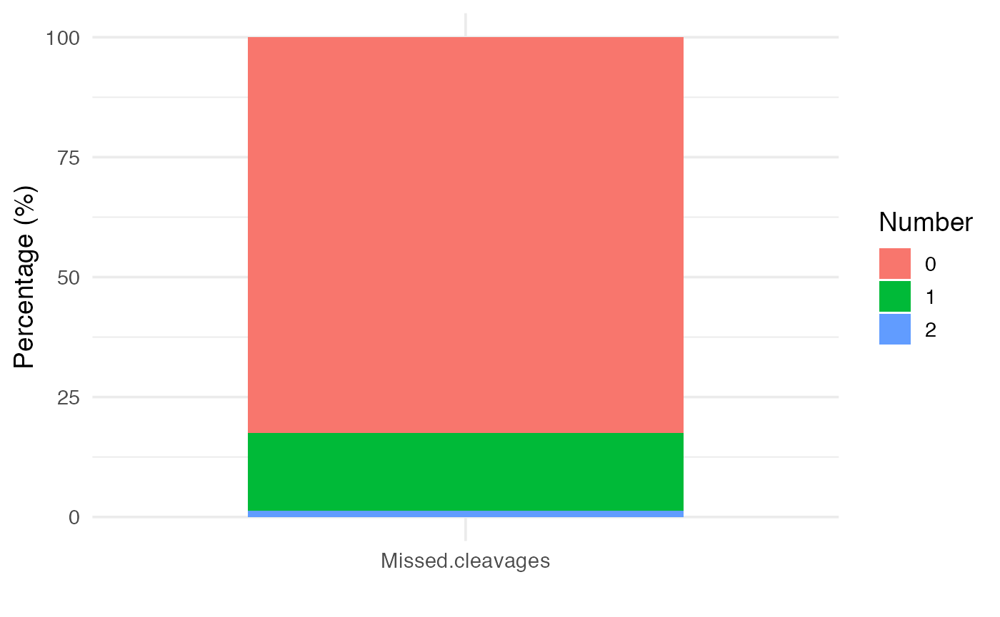
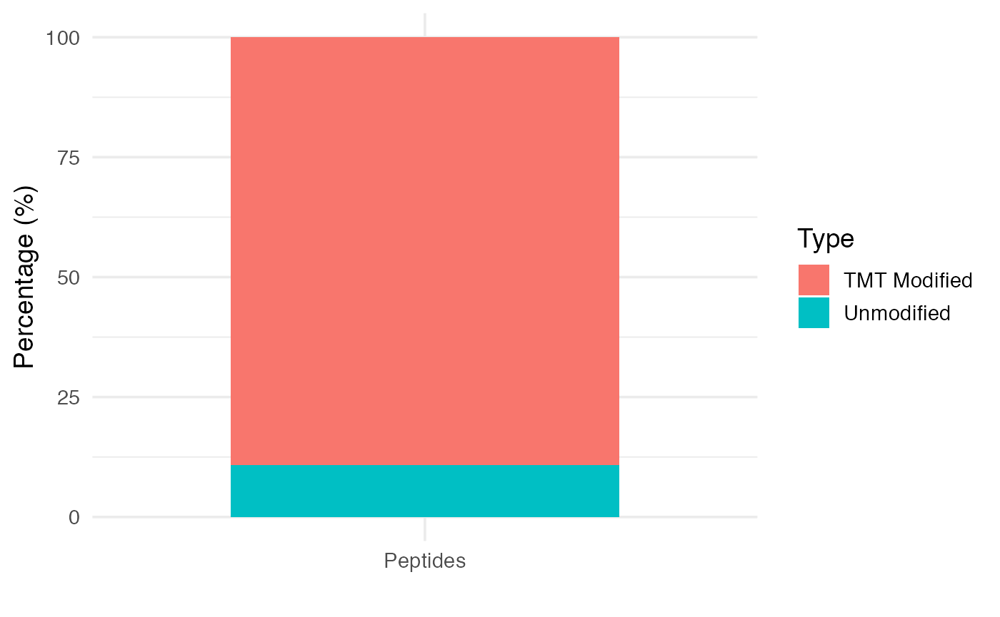
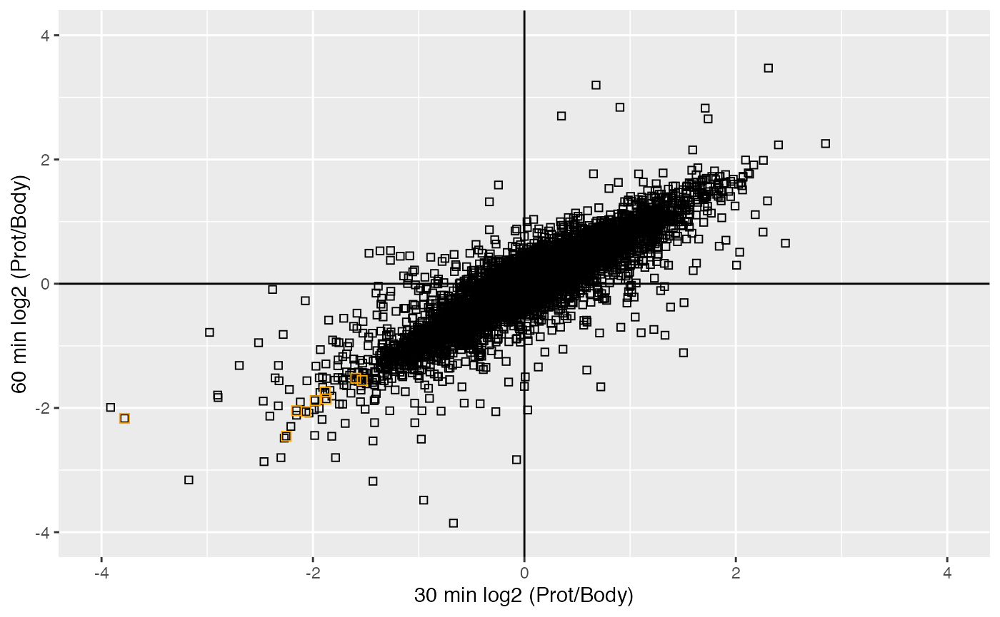

protrusionproteome.Rmdprotrusionproteome is a package that provides an analytical workflow of shotgun mass spectrometry-based proteomics experiments with tandem mass tag (TMT) labelingof protrusion profiling experiments (Maria Dermit 2020). Protrusion are purified from microporous transwell filters and their proteomes are compare to the cell bodies.
protrusionproteome requires tabular input e.g. proteinGroups.txt, peptides.txt and evidence.txt output of quantitative analysis software like MaxQuant. Functions are provided for preparation, filtering as well as log transformation,calculating TMT ratios and median substation as well as generating SummarizedExperiment objects. It also includes tools to visualize protrusion purification efficiency, protease miscleavages and TMT incorporation efficiency with visualization such as scatterplot and barplot representations. Finally, it includes statistical testing of significantly enrich categories in cell protrusions.
Start R and install the protrusionproteome package:
if (!requireNamespace("BiocManager", quietly=TRUE))
install.packages("BiocManager")
BiocManager::install("protrusionproteome")
library("protrusionproteome")Once you have the package installed, load protrusionproteome and dplyr for data transformation into R.
We analyze the time-course protrusion profiles proteome dataset from (Maria Dermit 2020) (PRIDE PXD021239), which is provided within this package. The raw mass spectrometry data were first analyzed using MaxQuant (Jürgen Cox 2014). We initially perform a number of data quality checks including trypsin efficiency and TMT labeling incorporation.
Tryspsin was the protease used to produce tryptic peptides for this dataset. Note that the maximum missed cleavages allowed on the MaxQuant search was 2. The numbers of trypsin miscleavages can be used as a proxy of trypsin efficiency. This information is contained in the peptides.txt file, and it is provided with this package:
# Peptides data is provided with the package
data("peptides.raw")
pepdata <- peptides.rawTo visualize trypsin efficiency, the plot_miscleavagerate function can be used.
# Stacked barplot of trypsin miscleavages
plot_miscleavagerate(pepdata)
TMT label efficiency can be measured as a proxy of peptides modified by TMT. This information is contained in the evidence.txt file, and is provided with this package:
#Evidence data is provided with the package
data("evidence.raw")
evidencedata <- evidence.rawTo visualize TMT label efficiency, we can use plot_labelingefficiency function.
plot_labelingefficiency(evidencedata)
Protein intensities are obtained from aggregated peptides over protein groups. This information is contained in the proteinGroups.txt file, is provided with this package and is used as input for the downstream analysis.
# The data is provided with the package
data("prot.raw")
data <- prot.rawThis dataset has the following dimensions:
dim(data)
#> [1] 5905 107We filter for decoy database hits, contaminant proteins and hits only identified by site, which are indicated by “+” in the columns “Reverse,”“Potential.contaminants” and “Only.identified.by.site,” respectively using filter_MaxQuant function.
proteins_filtered <- filter_MaxQuant(data,
tofilter= c("Reverse" , "Potential.contaminant" ,"Only.identified.by.site"))
#> Filtering based on 'Reverse', 'Potential.contaminant', 'Only.identified.by.site' column(s)We can see that the filtered data has following dimensions:
dim(proteins_filtered)
#> [1] 5541 107Uniprot names are protein unique identifiers but are not immediately informative. The associated Gene names are informative, however these are not always unique (i.e Gene.names is not primary key to the proteins_filtered table).
# Are Gene.names primary key to this table?
proteins_filtered %>% group_by(Gene.names) %>% summarize(count= n()) %>%
arrange(desc( count)) %>% filter( count > 1)
#> # A tibble: 94 x 2
#> Gene.names count
#> <chr> <int>
#> 1 "" 18
#> 2 "PLEC" 6
#> 3 "CAST" 4
#> 4 "ANXA2" 3
#> 5 "HLA-C" 3
#> 6 "LSM14B" 3
#> 7 "NAP1L1" 3
#> 8 "PCBP2" 3
#> 9 "ABCE1" 2
#> 10 "ABCF1" 2
#> # … with 84 more rowsEven more critical, some proteins do not have an annotated Gene name. Similarly to (Xiaofei Zhang 2018) approach, for those proteins missing a Gene name identifier we will use the Uniprot ID.
data_unique <- make_unique(proteins_filtered, "Gene.names", "Protein.IDs", delim = ";")We can check that name variable uniquely identifies proteins.
The columns that will be used in the summarised experiment are Reporter.intensity.corrected columns. Below is the table of how the samples were labeled in this experiment.
columns_positions<-str_which(colnames(data_unique),"Reporter.intensity.corrected.(\\d)+.(\\d)")
intensities <- colnames(data_unique)[str_which(colnames(data_unique),"Reporter.intensity.corrected.(\\d)+.(\\d)")]
time_unit=30
time_span=c(1,2,4,8,16)
experiment <- str_c(minute(rep(minutes(x = time_unit) *time_span,each=2)),c("body","prot"),sep="_")
knitr::kable(tibble(intensities,experiment))| intensities | experiment |
|---|---|
| Reporter.intensity.corrected.1.1 | 30_body |
| Reporter.intensity.corrected.2.1 | 30_prot |
| Reporter.intensity.corrected.3.1 | 60_body |
| Reporter.intensity.corrected.4.1 | 60_prot |
| Reporter.intensity.corrected.5.1 | 120_body |
| Reporter.intensity.corrected.6.1 | 120_prot |
| Reporter.intensity.corrected.7.1 | 240_body |
| Reporter.intensity.corrected.8.1 | 240_prot |
| Reporter.intensity.corrected.9.1 | 480_body |
| Reporter.intensity.corrected.10.1 | 480_prot |
SummarizedExperiment objects (Martin Morgan 2020) are widely used across Bioconductor packages as data containers. This class of object contains the actual data (assays), information on the samples (colData) and additional feature annotation. We generate the SummarizedExperiment object from our data extracting information directly from the column names of rectangular data using the make_TMT_se function. The actual assay data is log2-transformed of median-subtracted Prot/Cell-bodies for each condition.
# Generate a SummarizedExperiment object using file information and user input
columns_positions<-str_which(colnames(data_unique),"Reporter.intensity.corrected.(\\d)+.(\\d)")
se <- make_TMT_se(data_unique,columns_positions,intensities,time_unit=30,
time_span=c(1,2,4,8,16), numerator= "prot", denominator= "body", sep = "_")Let’s have a look at the SummarizedExperiment object
se
#> class: SummarizedExperiment
#> dim: 5541 5
#> metadata(0):
#> assays(1): ''
#> rownames(5541): RBM47 TTC26 ... MAU2 ENPP4
#> rowData names(99): Protein.IDs Majority.protein.IDs ... name ID
#> colnames(5): 30_1 60_1 120_1 240_1 480_1
#> colData names(4): label ID condition replicateAs we see the number of columns has been reduced to half (from 10 column sample data to 5 column sample data containing log2 Prot/Cell-bodies ratios)
SummarizedExperiment::colData(se)
#> DataFrame with 5 rows and 4 columns
#> label ID condition replicate
#> <character> <character> <character> <numeric>
#> 30_1 30_prot 30_1 30 1
#> 60_1 60_prot 60_1 60 1
#> 120_1 120_prot 120_1 120 1
#> 240_1 240_prot 240_1 240 1
#> 480_1 480_prot 480_1 480 1We can visualise the Prot/Cell-bodies distribution across timepoints.
plot_scatter(se, 1, 2, "HIST", 'orange', 4, 4)
Histone proteins are depleted from cell body.
We can perform a protein enrichment analysis for a given timepoint
enrichment_table <- enrich_1D(se,timepoint= 5,
dbs = "GO_Molecular_Function_2018",
number_dbs=1)#> R version 4.0.3 (2020-10-10)
#> Platform: x86_64-apple-darwin17.0 (64-bit)
#> Running under: macOS Mojave 10.14.6
#>
#> Matrix products: default
#> BLAS: /Library/Frameworks/R.framework/Versions/4.0/Resources/lib/libRblas.dylib
#> LAPACK: /Library/Frameworks/R.framework/Versions/4.0/Resources/lib/libRlapack.dylib
#>
#> locale:
#> [1] en_GB.UTF-8/en_GB.UTF-8/en_GB.UTF-8/C/en_GB.UTF-8/en_GB.UTF-8
#>
#> attached base packages:
#> [1] parallel stats4 stats graphics grDevices utils datasets
#> [8] methods base
#>
#> other attached packages:
#> [1] SummarizedExperiment_1.20.0 Biobase_2.50.0
#> [3] GenomicRanges_1.42.0 GenomeInfoDb_1.26.2
#> [5] IRanges_2.24.1 S4Vectors_0.28.1
#> [7] BiocGenerics_0.36.0 MatrixGenerics_1.2.1
#> [9] matrixStats_0.58.0 forcats_0.5.1
#> [11] stringr_1.4.0 purrr_0.3.4
#> [13] readr_1.4.0 tidyr_1.1.2
#> [15] tibble_3.0.6 tidyverse_1.3.0
#> [17] lubridate_1.7.9.2 dplyr_1.0.4
#> [19] knitr_1.31 protrusionproteome_0.99.0
#> [21] ggplot2_3.3.3 BiocStyle_2.18.1
#>
#> loaded via a namespace (and not attached):
#> [1] bitops_1.0-6 fs_1.5.0 httr_1.4.2
#> [4] rprojroot_2.0.2 tools_4.0.3 backports_1.2.1
#> [7] utf8_1.1.4 R6_2.5.0 DBI_1.1.1
#> [10] colorspace_2.0-0 withr_2.4.1 tidyselect_1.1.0
#> [13] compiler_4.0.3 textshaping_0.3.0 cli_2.3.0
#> [16] rvest_0.3.6 enrichR_3.0 xml2_1.3.2
#> [19] desc_1.2.0 DelayedArray_0.16.1 labeling_0.4.2
#> [22] bookdown_0.21 scales_1.1.1 pkgdown_1.6.1
#> [25] systemfonts_1.0.1 digest_0.6.27 rmarkdown_2.6
#> [28] XVector_0.30.0 pkgconfig_2.0.3 htmltools_0.5.1.1
#> [31] highr_0.8 dbplyr_2.1.0 fastmap_1.1.0
#> [34] rlang_0.4.10 readxl_1.3.1 rstudioapi_0.13
#> [37] farver_2.0.3 generics_0.1.0 jsonlite_1.7.2
#> [40] RCurl_1.98-1.2 magrittr_2.0.1 GenomeInfoDbData_1.2.4
#> [43] Matrix_1.3-2 fansi_0.4.2 Rcpp_1.0.6
#> [46] munsell_0.5.0 lifecycle_1.0.0 stringi_1.5.3
#> [49] yaml_2.2.1 snakecase_0.11.0 zlibbioc_1.36.0
#> [52] grid_4.0.3 crayon_1.4.1 lattice_0.20-41
#> [55] haven_2.3.1 hms_1.0.0 pillar_1.4.7
#> [58] rjson_0.2.20 reprex_1.0.0 glue_1.4.2
#> [61] evaluate_0.14 BiocManager_1.30.10 modelr_0.1.8
#> [64] vctrs_0.3.6 cellranger_1.1.0 gtable_0.3.0
#> [67] assertthat_0.2.1 cachem_1.0.4 xfun_0.21
#> [70] janitor_2.1.0.9000 broom_0.7.5 ragg_1.1.0
#> [73] memoise_2.0.0 ellipsis_0.3.1